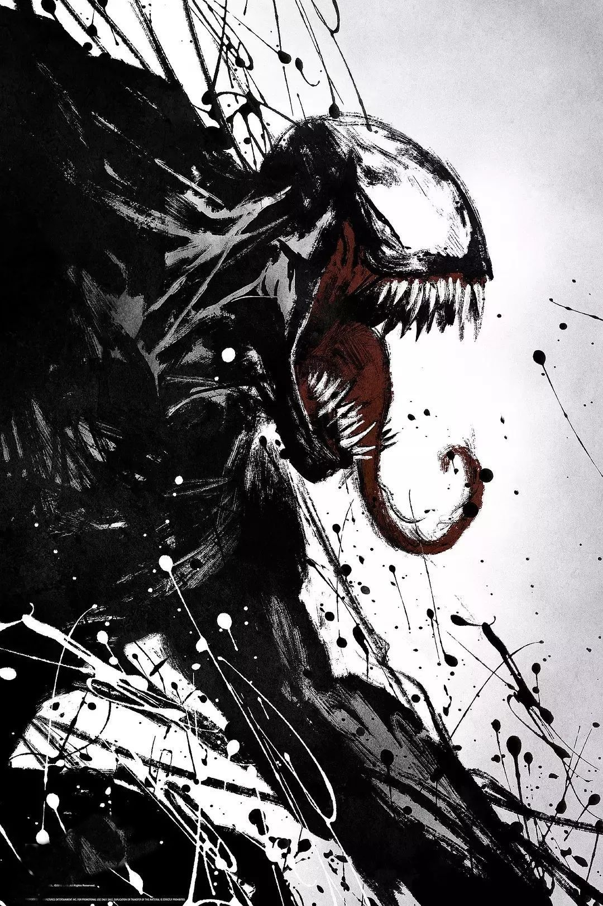

毒液（美国漫威漫画中的反英雄） 毒液（Venom）是美国漫威漫画中的反英雄，也是多位角色使用的代号，初次登场于《神奇蜘蛛侠》（Amazing Spider-man）第299期（1988年4月），是一种有思想的外星生命共生体，几乎以液体状的形式出现。它需要与一个宿主结合才能生存（在《毒液V4》后期与共生体之神纳尔接触后获得独立生存的能力），并能赋予宿主强大的超能力。 当毒液共生体与宿主结合时，这两种生命形式的生命体结合才能被称作毒液，如果宿主是好人，可以让好人越战越勇，成为超级英雄，如果宿主是坏人，会使其变成超级反派。其中最著名的宿主就是爱德华·“艾迪”·布洛克（Edward "Eddie" Brock）、尤金·“闪电”·汤普森（Eugene "Flash" Thompson）和“蜘蛛侠”彼得·帕克（“Spider-Man”Peter Benjamin Parker）。
|
 |
| 能力 | 历代宿主 |
超能力
博学多识：共生体曾去过许多星球，跨越数不尽的大陆，并得知了那的许多不为人知的秘密，它也了解许多的外星知识。
语言天赋：因为自己去过许多星球，这也让他懂得许多的语言，如：火星语、冥王星语、幸运星语等等，他也了解许多生物的语言。
灵魂抵抗：共生体也是拥有灵魂，在《圆环四侠》中它和墨菲斯托做过交易（本来闪电以为墨菲斯托是和自己做的交易，实际并不是，做交易的是共生体因为恶魔的烙印在毒液上），而为了避免被恶魔侵占它，它在闪电救安迪时分离了自己被侵占的灵魂（闪电并不知情），由此诞生了狂躁。恶灵骑士的审判之眼也对他的效果不甚好，甚至被反噬。
魔抗抵御：因为共生体的身体构造与基因关系，让他可以抵抗魔法对他产生的大量伤害，但却无法完全免疫魔法攻击。
 《Venom: Space Knight》毒液设定(7张)
强大力量：共生体的基因让宿主可以获得轻松超越人类的力量，通常毒液的力量以在地球的第二任宿主蜘蛛侠为基准值略有增强，极限值在70吨上下。由于长期与原本就身强体壮的艾迪·布洛克长期结合，毒液自身的力量也有了突破性的提升。在某些特殊场合，毒液曾在虚弱的状态下为了救一个女生徒手举起了重达200吨的嘉年华轮，甚至能够与红坦克一对一较量而不落下风前期被红坦克压制，但是后期又反揍了回去，甚至打出了地震，而且明显没有用出全力。虽然毒液的力量通常是固定的，但由于共生体变形增殖的能力，其上限无法确定。
惊人速度：毒液在奔跑的状况下，自身速度可超过一架直升机，而在利用四肢奔跑的情况下则是双腿奔跑的2倍速度。同样的，毒液最快的速度可轻松追上一发冲锋枪与狙击枪的子弹，这一表现则是超音速，两马赫以上。
超凡耐性：毒液的耐性与防御力非常强大，自身身体不管是散弹枪子弹、冲锋枪子弹与穿甲子弹都无法伤害到他的身体并会被他的身体硬度弹飞与摧毁，武器攻击不管是向他挥砍，穿捅还是穿刺都无法伤害到他，同时那个武器也会直接断掉。他经得起炮火狂轰的攻击，承受超重型坦克的正面火力攻击与不断碾压性攻击。基质他也能经受核能炮与绿巨人浩克的攻击。毒液从任何高处摔落都不会对自身造成任何伤害并且也会制造出大规模的破坏痕迹，即使自己被贯穿了整个身体也不会感受到痛感。
基因复制：毒液只要附身一个宿主时，就可以通过基因，来复制宿主的能力，比如死侍的自愈与蜘蛛侠的超能力，但是复制能力需要一定的附身时间。
共生体甚至可以通过强化宿主的基因，来使宿主的能力倍化，一般的能力可以达到几十倍。一般而言只要短短几日，宿主的力量就不是一般的超级英雄或超级反派可以与之交手。
知识小百科：基因（遗传因子）是产生一条多肽链或功能RNA所需的全部核苷酸序列。
基因支持着生命的基本构造和性能。储存着生命的种族、血型、孕育、形态、能力、生长、凋亡等过程的全部信息。环境和遗传的互相依赖，演绎着生命的繁衍、细胞分裂和蛋白质合成等重要生理过程。
生物体的生、长、衰、病、老、死等一切生命现象都与基因有关。它也是决定生命健康的内在因素。因此，基因具有双重属性：物质性（存在方式）和信息性（根本属性）。
蜘蛛侠的各项能力：因为自身的附身过蜘蛛侠，所以自身也有蜘蛛侠的能力。比如蜘蛛感应，虽然没有蜘蛛侠的蜘蛛感应强但一样可以使用，他可以感受到四周各处的环境，也可以感受到附近潜在的危险等等。
并且自己即使没启动蜘蛛感应的话他也一样非常敏捷，毒液可轻松躲过子弹与激光攻击，进行迅速的躲藏，甚至跳跃到可轻松超过一栋大厦。
他可在墙面上进行攀爬与奔跑，虽然会造成些破坏的痕迹。毒液与蜘蛛侠不同，蜘蛛侠需要自己的蛛网发射器才可喷射蛛丝，而毒液则是从自己的手腕里直接喷射出蛛丝，同时颜色也不是蜘蛛侠的白色蛛丝而是更加坚硬无比且柔韧性强大的黑色蛛网。
液化：因为他自身属于液体，这让他可通过自己的意愿把自己液体化，或是通过液体化改变形态如制造阶梯，钢笔，钱财等等，甚至在自己液体化的同时他也能同化并漫游进电子信号与网络中。在自己的液态化情况下毒液也能任意舒展四肢或是从体内喷射出触须等等。
幻化：毒液可幻化自身的身体，他能够将自身双手幻化为各种各样的兵器，幻化出翼翅，也可幻化出护盾与铠甲这样的防御装备进行防御。但是有些幻化需要HIVE-MIND（不同的HIVE MIND提供的兵器不同）比如翼翅，和在EARTH-1051中使用的手炮，这些单凭共生体本身无法幻化。
伪装：他有着强大的伪装与隐藏能力，在黑暗里，他可以说是其中的王者，没人可以看见他，也没人可以发现他。毒液也可以将自己进行隐身来潜行。如果说要混入敌军内部的话，伪装自己总是最好的，他可以通过意识改变自己的外貌与体型，甚至连自己的声带、指纹与瞳孔等等都可以改变。
超强治愈能力：共生体的治愈能力非常强大，他能够轻松治愈破皮伤与割伤，甚至他受到了非常致命的攻击也可进行自愈，肢体被折断了也可以迅速再生新肢体。
被打成肉泥或是一滩水的话如果有足够的时间他也可以恢复。同时他的治愈能力也让他免疫了各种病毒与疾病，甚至连心灵控制与核辐射也可以免疫。
毒液的治愈能力因为附身过死侍所以比一般的共生体更变态，比如他曾被金刚狼捅穿心脏，被屠杀剖开肚子，被浩克一拳打成个稀巴烂，他依然能够瞬间治愈并重新站起来，他曾被断肢但不一会便再度长了回来（艾迪在和屠杀战斗时失去了一只手就无法长回，但虽然不能恢复共生体依可以代替它），同时自身被打碎或打散了也都可以迅速复原，同时自身的每一个基因与细胞等受到一丁点伤害或受到大规模伤害都可迅速再生与重生。 [1]
弱点
共生体虽然非常强大但也是有着自身弱点的，超声波与高温可使他与宿主强制分离，甚至也会对自己造成严重的伤害，但是共生体是可以进化的，所以这两种弱点是可以克服的。但还有一些较强的共生体是本身就不惧怕声波或高温。
共生体无法使人变坏或变好，但它会使人情绪化。 |
特.卡尔
在《毒液：初代宿主》中真正的第一代宿主登场，一个克里人士兵，毒液第一代宿主，但是在毒液再次见到他前自己也不知道他曾是自己的宿主，因为他们一起经过了特殊训练使得记忆被压制，以防遇到审问。
值得注意的事在《毒液：太空骑士》漫画里毒液带闪电·汤普森去了一个星球，表示自己在这里杀死了一代宿主，这个非真正的一代（因为毒液记忆被压制，所以不记得真正的一代），回到地球后毒液通过附体蜘蛛侠告诉了他所有的事，也包括一代宿主（非真正的一代）。
【在90年代漫画里，毒液表示自己来地球之前有过很多宿主（有可能超过一千个）】
韦德·温斯顿·威尔逊
死侍（韦德·温斯顿·威尔逊）见2015年对于秘战1的补充作《死侍的秘密战争》第3期。正如参加秘战1的毁灭博士来自相对于其他英雄的未来一样，死侍也来自更未来的616宇宙，因此他非常疑惑本来和他十分熟悉的其余超级英雄完全不认识他（秘战1前死侍还没有登场）。死侍被告知有个能换上酷炫制服的机器，由于打开方式错误而激活出了毒液，而死侍由于拥有最高级别的意识而轻易发现毒液有自我意识，便脱掉了他，殊不知其实这机器是用来关押毒液的监狱。
彼得·帕克
蜘蛛侠（彼得·帕克）首次出在秘密战争（Secret Wars）第8期（1984年12月）中，蜘蛛侠的战衣在外星的战斗中受损严重，被告知一个外星的机械能帮他制造新战衣，却不知原来机械是用来困住共生体的，当机械被激活时，共生体被附上了蜘蛛侠的战衣上，并改变了战衣的面貌，由蓝红变成黑白，并且可能随自己想法去改变其形态，变成任何的衣服，并且具有无限的蜘蛛丝供应其使用。
返回地球之后，蜘蛛侠十分享受新战衣所带来的方便，直到他开始发现自从有新战衣后，十分爱睡懒觉，并且在睡觉中会以蜘蛛侠的身份去到打击罪恶， 并在一次噩梦中梦见旧的战衣与新的战衣交战，所以决定去找好友神奇四侠中的神奇先生烈·李察士帮忙，神奇先生发现新战衣为共生体，当在蜘蛛侠睡眠时，会控制蜘蛛侠的身体，并且发现共生体有意图与蜘蛛侠永远地结合在一起。
在神奇先生的帮助下，发现共生体的弱点是声波与火焰，神奇先生用声波与火焰把共生体驱离蜘蛛侠，并把其困在一个透明的容器中，但却被逃离。
共生体离开后，返回蜘蛛侠的住所中，并伪装成其红蓝色的战衣在衣柜中，其后强行附身于蜘蛛侠的身体并防止再次其找神奇先生驱赶，蜘蛛侠在绝望中到达教堂的钟楼，凭著毅力拒绝共生体，但最后失去意识，但原来共生体在附身蜘蛛侠的其间产生了情感，所以在同情蜘蛛侠，从而离开了蜘蛛侠，透过钟楼的裂缝，寻找新的宿主。
其他宿主
特卡尔 ：克里战犯，第一代宿主，想利用毒液去夺取生化武器灭绝斯库鲁，在最后想刺杀眠者时被眠者反杀，并对他进行脑改造使其成为了无意识宿主，后因眠者向一群外星人透露了真面目而被认为是怪物，在争斗中死于流弹。但眠者依然能生存和战斗，只是因宿主死亡而实力减弱。
安吉洛（Angelo）被毒液抛弃而摔死。
蝎王麦克·加根盖尔（Mac Gargan）
毒液特工：尤金·"闪电"·汤普森（Eugene "Flash" Thompson）：拥有前几代毒液的所有能力。并在共生体母星修复了毒液的缺陷，得到了全新的能力，成为一名合格的宇宙特工。后在与艾迪.布鲁克争夺毒液时因蜘蛛侠想杀死毒液而使用了一种血清而使他成为了血清特工，后被红魔/屠杀绿魔杀死。
章鱼博士：章鱼博士在占据帕克的身体成为究极蜘蛛侠时，用计将毒液强行从闪电体内分离，但因低估共生体力量，储存容器破损，使其跑出并附身在自己身上成为究极毒液，后在与复仇者战斗中意识到自己被控制，最终在闪电及蜘蛛侠灵魂碎片的帮助下成功摆脱。
李·普莱斯:在《毒液V3》中得到毒液，后被FBI夺走，为了重新得到毒液，将闪电汤普森的徒弟安迪身上的狂躁夺走，变成疯狂，还拥有了控制他人的能力，后在血清特工，蜘蛛侠，黑猫，毒液的共同努力下被彻底击败。
女宿主
|
人物能力数值表
注：数值区共生体本体通常状态
| 智力 | 3 | 力量 | 7 |
|---|---|---|---|
附：MARVEL漫画官方能力参考
| 属性 | 备注 | 分级 |
|---|---|---|
| 智力 | 思考和处理信息的能力 | ⒈ 迟钝 / 削弱、⒉正常、⒊ 有学识、⒋ 有天赋、⒌ 天才、⒍超级天才、⒎无所不知 |
| 力量 | 举起/承受重物的能力 | ⒈较弱（不能承受与自身等同重量的物体）、⒉正常（能够承受与自身等同重量的物体）、⒊常人极限（能够承受自身2倍重量的物体）、⒋超出常人(800pt~25t)、⒌超出常人(25t~75t)、⒍超出常人(75t~100t)、⒎难以计算（超过100t） |
| 速度 | 在地球上移动的能力 | ⒈正常以下、⒉正常、⒊超出常人（但不高于时速700英里）、⒋音速(1马赫)、⒌超音速（2马赫）、 ⒍光速（每秒1860000英里） 、⒎速度失真（超光速） |
| 耐力 | 抗击或身体恢复的能力 | ⒈较弱的、⒉正常的、 ⒊增强的、⒋可再生的、⒌可防弹的、⒍超出常人、7.近乎不死 |
| 能量发射 | 向体外释放能量的能力 | ⒈不能释放能量、⒉通过接触释放能量、⒊在短时间内释放近射程的单一能量、⒋在中等时间内释放中等射程的单一能量、 ⒌在长时间内释放远射程的单一能量、⒍能够释放多种能量形式、⒎能够近乎无限的释放多种能量形式 |
| 战斗技能 | 徒手搏斗的程度和战斗能力 | ⒈不擅长、 ⒉一般的、⒊受过一些训练、⒋有经验的战士、⒌精通一种格斗方式、⒍精通几种格斗方式、⒎精通全部格斗方式 |
.png)